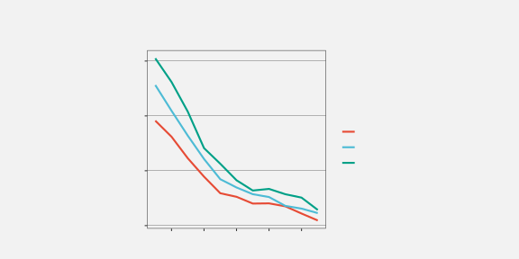
13 Text
Figure 13.1 is a version of Figure 1.1 with one significant modification: all of the text has been removed. Although we can see that some values, or rather three sets of values, haved decreased, we cannot tell what the values are or by how much they have decreased. If there was ever any doubt, Figure 13.1 makes it clear that text is doing a lot of important work in a data visualisation.
Eye-tracking studies also show that people spend a lot of time looking at the text within a data visualisation. For example, in Figure 13.2, there are more fixations in the regions that contain text than anywhere else. There is also evidence that text elements are more memorable than the other elements of a data visualisation.1


This chapter looks at the role that text plays in making data visualisations work.2
13.1 Visual features of text
One role that text serves within a data visualisation is as a standard data symbol. For example, Figure 13.3 is a version of the bar plot Figure 3.1 with white text added to each bar to show the exact number of offenders in each ethnic group. In Figure 13.3, there are bar data symbols and there are text data symbols (the white text).
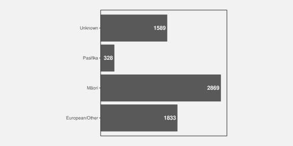
Just as data values are encoded to the visual features of the bar data symbols in Figure 13.3, data values are also encoded to the visual features of the white text data symbols. For example, the ethnic groups are encoded as the vertical position of the bars and as the vertical position of the white text. The data values for the number of offenders in each ethnic group are encoded as the length of the bars and as the horizontal position of (the right edge of) the white text.
There is also a very important encoding of data values to the pattern visual feature of the white text. The data values for the number of offenders in each ethnic group are encoded as the pattern of the white text—the letters and digits that make up the text. Each white text data symbol has a different pattern because it is composed of a different set of digits.
Just as we can decode data values from the visual features of the bars in Figure 13.3, we can decode data values from the visual features of the text. For example, we can see just from the vertical positions of the white text, without reading the text values, that each text symbol corresponds to a different ethnic group. We can also see, just from the horizontal position of the text, without reading the text values, that some counts are (much) larger than others.3 We can also see, just from the text pattern, without reading the text values, that the counts are different. Every white text label has a different pattern.
Encoding data values as the position, colour, and pattern of text data symbols is effective for the same reasons that these visual features are effective for other types of data symbols.
However, the unique power of text comes from decoding the pattern of the text. Text is the ultimate example of a learned encoding (Section 12.1). We all learn to read text (and numbers), which means that, when we are presented with a text pattern, there is a pre-existing decoding to the semantic content of the text (Figure 13.4). For example, in Figure 13.3, we are able to decode the data value two thousand, eight hundred and sixty-nine (the count for Māori) from the text “2869”.
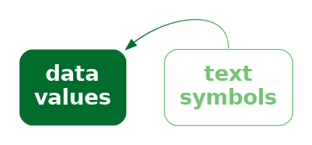
Encoding data values as the pattern of text is uniquely effective thanks to the learned decoding of information from specific combinations of digits and letters.
Figure 13.5 shows another example of text being used as data symbols. This scatter plot includes both data point data symbols, one for each country in the 2023 Rugby World Cup, and text data symbols, the names of the countries that finished the tournament in the top four places.

We can again see several encodings of data values as the basic visual features of text data symbols. The horizontal positions of the country names encode the number of clean breaks for each country, just like the data points. The vertical positions of the country names encode the number of tries scored by each country, just like the data points. Again, there is also an encoding that just involves the text: the country name is encoded as the pattern of the text (the letters used for each text symbol).
There are simple decodings from the positions of the text symbols to data values. For example, we can decode the number of tries scored by each of the top-four teams from the vertical positions of the text and see that New Zealand scored more tries (on average) than the other three teams.
However, the most important decoding is from the patterns of the text symbols. These learned decodings allow us to identify each top-four country by name.
13.2 Text-specific visual features
In addition to the standard visual features like position and colour, there are some visual features that are specific to text data symbols. For example, Figure 13.6 shows a variation on Figure 13.5 where the hemisphere for each of the top-four teams is encoded as the weight and style of the text symbol: teams from the southern hemisphere are bold and italic. Another examples of a text-specific visual feature is the font family, for example, Arial versus Times Roman.4
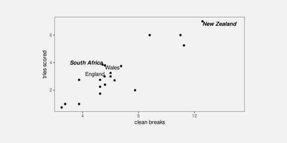
We see uses of basic visual features and text-specific visual features in almost any piece of writing. For example, section headings are typically larger and bolder than the main text in a report. The Executive Summary in this book makes use of colour and angle to create visual connections between associated terms within a bullet-point list. These are examples of encoding qualitative groups, such as headings versus normal text, using just the visual features of text.
13.3 Decoding text
As we have seen already, data values can be encoded as the visual features of text, like position and colour, and data values can be decoded from the visual features of text just like for any other data symbol.
There are text-specific visual features, like font weight, font style, and font family and these are most useful for encoding and decoding qualitative information. Font family is a nominal feature, like hue, and it has a similarly limited capacity. Font weight and font style (or slope) in theory allows for the encoding of numerical values, but similar to area and angle, the relatively low accuracy means that we can only really decode ordinal data values.5
However, the most important decoding of text symbols is the learned decoding of text patterns—reading numbers and words from text symbols. How effective is this decoding?
In terms of the criteria that we discussed in Chapter 3, the value of a text pattern is that it allows us to decode data values very accurately. Text patterns are also very flexible because they are capable of encoding both quantitative and qualitative data values. Finally, text patterns have a very large capacity; we are able to distinguish between many different words and numbers.
Encoding data values as the pattern of text is very effective because text patterns can be used to represent any sort of data and text patterns allow a very accurate decoding of data values.
The pattern of text is also almost unique in permitting decoding of absolute data values. In Section 4.1, we saw that we can decode positions very accurately, but only relative to other positions. It is not possible to decode an exact numeric value from a position. However, it is possible to decode an exact numeric value from a text pattern. Visual objects can also sometimes allow decoding of absolute data values (Section 12.1), but to a much more limited extent than text (Section 12.9). We will talk more about this important decoding of text in Section 13.7.
We can decode absolute data values from a text pattern because there is a pre-existing, learned decoding of words and numbers.
Compared to much simpler data symbols like the bars in a bar plot, text data symbols are much more complex shapes. In terms of the visual processing model from Section 2.2, the text data symbols are similar to visual objects. This means that text can convey more sophisticated information, at the expense of more cognitive effort, and with a limit on how many shapes we can process simultaneously (Figure 2.3).6
One consequence of this flexibility is that, as well as being able to encode any data value as text, we can encode any sort of data summary as a text pattern. For example, we can use text to describe the size of the difference between two groups or the degree of correlation between two variables.
We can decode complex information from text patterns.
On the other hand, one weakness of text data symbols is that it requires more cognitive effort to compare data values from text patterns than it does to compare data values from the simple visual features of simple geometric shapes. For example, in Figure 3.1, it is quick and easy to approximate the ratio of Pasifika to Māori or European/Other to Māori from the lengths of the bars. Those comparisons are slower and take more conscious effort if we try to use the white text data symbols in Figure 13.3.
It is harder to compare data values that are encoded as text patterns because it requires more effort to decode data values and to perform mental calculations.
Another point is that encoding data values as a text pattern is not congruent. Although there is a learned decoding of text, there is no implicit decoding of text. For example, Figure 13.7 shows a bar plot of just two numbers, with the numbers encoded as the lengths of the bars. The bar lengths are congruent with the amounts (Section 7.3), so it is easier to decode the two numbers from the bars than it is from a text pattern like this:
"The crime rate for females in New Zealand is less than half the
crime rate for males."The text above does not have the same instant impact as the bars in Figure 13.7.
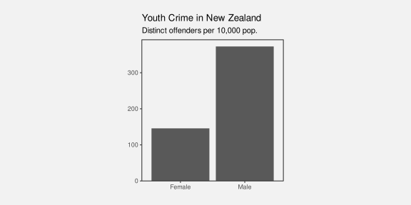
This is not to say that encoding data values as a text pattern is a dissonant encoding, it is just not a congruent encoding.
In addition, our visual system cannot generate visual summaries of large amounts of text (Section 8.2). This is why a table of numbers, like Table 1.1, is ineffective for perceiving groups of values or trends in values.7
Large numbers of text data symbols are not effective because the visual system cannot decode visual summaries from the text.
It is possible to encode a data summary as a text pattern, but again we encounter a lack of congruence. For example, Figure 13.8 shows a line plot of the crime rate in New Zealand over time for males and females. The downward slopes of the lines in Figure 13.8 are congruent with the decreases in crime rate (Section 10.1), so it is easier to decode these data summaries than it is from a text pattern like this:
"The youth crime rate in New Zealand has decreased for both males and females
from 2011 to 2021, though that decrease slowed from around 2018."The text above does not have the same instant impact as the lines in Figure 13.8.
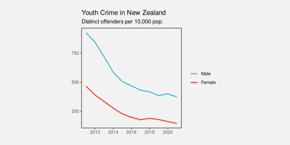
13.4 Case study: Word clouds
Figure 13.9 shows a word cloud data visualisation based on the text of the Wikipedia page on the Rugby World Cup.8 This visualisation shows the frequency with which different words appear on the Wikipedia page. The data values that are being visualised are shown in Table 13.1.

This data visualisation is unusual because it consists entirely of text data symbols. The encodings in Figure 13.9 include encoding each word as the pattern of a text data symbol and encoding frequency as the size of a text data symbol. There is no need for a guide for the encoding from words to text pattern because there is a learned decoding (Figure 12.4); we can decode each text data symbol into a word data value because that decoding has already been learned.
There is no guide for the encoding from word frequency to text size, so we cannot decode exact word frequencies. Table 13.1 shows the six most frequent words. However, the visualisation is still effective at conveying the relative frequencies. The larger words occurred more frequently. For example, we can see the names of the teams that were most successful at the tournament, like New Zealand and South Africa, are much larger than less successful teams.
| word | freq |
|---|---|
| rugby | 72 |
| world | 66 |
| tournament | 56 |
| cup | 54 |
| new | 41 |
| zealand | 38 |
The encoding of frequencies as the size of the words does not provide the best accuracy for decoding frequencies (Section 3.5) and this made worse by the fact that longer words become even larger. This means that we cannot identify the exact frequency of any one word, we cannot identify the quantitative difference in frequency between pairs of words, and we cannot easily perceive the distribution of frequencies across words. A word cloud is only effective for approximate ordinal comparisons of word frequencies (Chapter 3).
Frequency is also encoded to position in space, with more frequent words placed towards the centre of the word cloud. This is an example of redundant encoding; more frequent words are both larger and more central (Section 9.8).
A word cloud is effective for conveying words because it encodes words to text data symbols. It is also partially effective for conveying relative frequencies of words because it encodes word frequency to both size and position in space.
Another benefit of encoding frequency as position in space is the efficient use of space. For example, Figure 13.10 shows the same data presented as a bar plot with the frequency of each word encoded to a separate bar. Although the accuracy is improved for comparing frequencies, the bar plot does not have as much room for the words themselves.
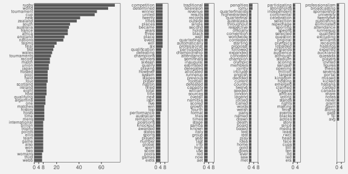
One weakness of the word cloud is that the angle of words changes with no corresponding change in the data values. This is an example of a dissonant encoding, which can cause confusion (Section 7.5). The viewer will notice the differences in angle and attempt to decode that difference to a difference in data values that does not exist.
The different angles of text in a word cloud is not effective because it does not encode any differences in the data.
13.5 Case study: Tables
Table 13.2 shows a subset of the 2023 Rugby World Cup data set (Table 9.1), just including the top eight nations in the tournament. We established in Section 13.3 that visualising data values in a table provides an excellent basis for accurately decoding individual data values, but imposes a larger cognitive burden for comparing values, and is a very poor for extracting visual summaries, such as trends.
For example, it is very difficult to determine from Table 13.2 whether there is any relationship between the values in the four numeric columns.
| country | sphere | runs | breaks | tries | points |
|---|---|---|---|---|---|
| South Africa | South | 95.14 | 5.429 | 3.857 | 29.71 |
| England | North | 100.3 | 5.571 | 3 | 31.57 |
| Fiji | South | 138 | 5.6 | 2.4 | 22.4 |
| Wales | North | 109.4 | 5.6 | 3.8 | 32 |
| Argentina | South | 131.3 | 6.286 | 2.714 | 26.43 |
| Ireland | North | 137.6 | 8.8 | 6 | 42.8 |
| France | North | 126 | 11 | 6 | 47.6 |
| New Zealand | South | 139.3 | 12.57 | 7 | 48 |
However, there are standard guidelines for formatting tables of values that can improve the readability of a table.9 Table 13.3 shows the same data as Table 13.2, but with all of the numeric columns right-aligned, a consistent number of decimal places in each column, fewer decimal places than the data actually possess, and the rows have been ordered from the highest number of points per game to the lowest.
It is easier to see some structure in Table 13.2. For example, the number of tries appears to decrease as well as the number of points. We can also see some evidence of the number of breaks decreasing as well, though it is weaker.
There are some familiar explanations for the improvement in the table display. The reduction in detail, with fewer decimal places, means that there is less complexity in the visual field. The consistent number of decimal places means that less is changing, so differences are easier to detect (Section 2.5). Also, the consistent baseline provided by right-alignment means that the text length of the numbers (the number of digits in each number) provides a crude encoding of the size of the number, particularly in the column showing the number of clean breaks. However, it is worth noting that some of the accuracy of the text has been sacrificed in order to make some of these gains.
| country | sphere | runs | breaks | tries | points |
|---|---|---|---|---|---|
| New Zealand | South | 139 | 12.6 | 7.0 | 48.0 |
| France | North | 126 | 11.0 | 6.0 | 47.6 |
| Ireland | North | 138 | 8.8 | 6.0 | 42.8 |
| Wales | North | 109 | 5.6 | 3.8 | 32.0 |
| England | North | 100 | 5.6 | 3.0 | 31.6 |
| South Africa | South | 95 | 5.4 | 3.9 | 29.7 |
| Argentina | South | 131 | 6.3 | 2.7 | 26.4 |
| Fiji | South | 138 | 5.6 | 2.4 | 22.4 |
For comparison, Figure 13.11 shows a scatter plot of the data from Table 13.2. The data symbol is a circle, with the number of tries encoded to horizontal position, the number of points encoded to vertical position, the number of clean breaks encoded to size, and the number of runs encoded to colour (shade). The relationships between tries and points and between breaks and both tries and points are still easier to perceive in this plot than in Table 13.3, but Table 13.3, even with its rounding, still provides better accuracy, particularly for breaks and runs.
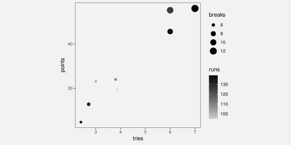
13.6 Case study: Stem-and-leaf plots
Figure Figure 13.12 shows a histogram of the number of tries scored by teams in the 2023 Rugby World Cup. The data symbols in Figure 13.12 are bars. The raw data values are the average number of tries per game for each team, but the lengths of the bars encode data summaries: the number of teams with an average number of tries within each range: 0 to 1, 1 to 2, and so on.
Because the borders of the bars are not drawn, we get an emergent shape from the combined bars (similar to a density plot; Section 10.3).
This histogram allows us to see features of the data summaries, such as a suggestion that there is a small subset of teams that score a higher number of tries than the other teams (a bimodal distribution; though in this case we have a very small amount of data). However, there is no way to decode the raw data values from this histogram.
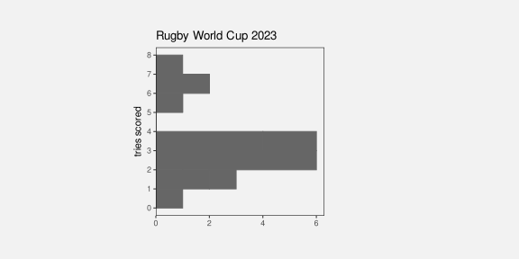
Figure Figure 13.13 shows a stem-and-leaf diagram of the same data (with tries scored rounded to one decimal place).10 The data symbol in this case is a text digit. Every team is encoded as a digit from 0 to 7, which represents the first decimal place for the average number of tries scored by each team. For example, New Zealand scored 7.0 tries per game on average and that is encoded as a 0 beside the 7 on the y-axis. The number of tries is also encoded as a combination of vertical position (the whole number of tries) and horizontal position (teams with the same whole number of tries are stacked horizontally, but also ordered by the first decimal place value).
The number of teams within each range (0 to 1, 1 to 2, etc) is encoded by the number of digits. Another way to look at it is that the data symbol is a piece of text consisting of several digits and the number of teams is encoded as the length of the piece of text.
As with the histogram in Figure 13.12, there are emergent shapes with two distinct humps visible, one taller than the other. However, in Figure 13.13 we are also able to decode the raw data values as well. Furthermore, because the data symbols are text digits, we are able to decode individual data values very accurately.
In summary, Figure 13.13 combines standard decodings (length) with learned decodings (text pattern) to provide access to both high-level features of data summaries and raw data values.

Figure 13.14 shows a variation on Figure 13.13 with the hemisphere encoded as the colours of the digits. This provides another demonstration that we can use simple visual features like colour to encode data values with text data symbols.
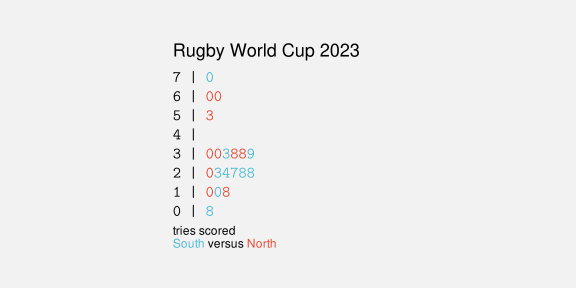
Figure 13.15 shows another variation on Figure 13.13, this time with the hemisphere encoded as the weight of the digits. This demonstrates the idea that there are text-specific visual features that can be used to encode data values (Section 13.2).
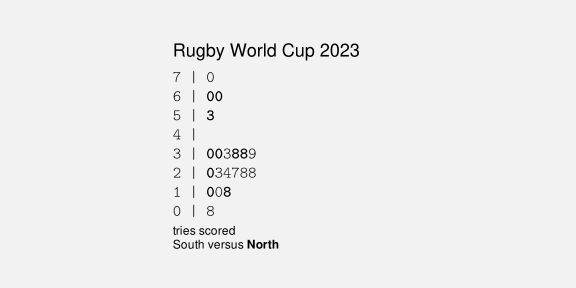
Stem-and-leaf plots might be seen as an archaic form of data visualisation, but we can see that they are effective in many ways.11
Unfortunately, despite all of their advantages, stem-and-leaf plots have a limited usefulness because they can only accommodate very small data sets. There is a similarity between a stem-and-leaf plot and the stacked icon plot in Figure 12.21 (a). However, whereas an icon can easily be used to represent some multiple of objects, that option is not available for text digits.
13.7 Encoding encodings
Figure 13.16 shows a dot plot of the total number of points scored by Tier One nations at Rugby World Cups. This data visualisation contains no text data symbols. The only data symbols, in the traditional sense, are the coloured circles.
However, there are text elements within Figure 13.16, on both axes and in the legend. Most of the data visualisations that we have seen so far have contained axes and legends, but we have largely ignored them and concentrated just on the data symbols within a data visualisation. In this section, we look at the work that axes and legends, particularly the text elements of axes and legends, are doing within a data visualisation.
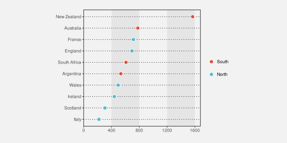
There are very familiar encodings of data values to data symbols in Figure 13.16. The number of points is encoded as the horizontal position of the circles, The different teams are encoded as the vertical position of the circles, and the hemisphere of each team is encoded as the colour of the circles.
Although we have seen these encodings many times, we have not previously addressed the fact that, in addition to producing the location and colour of the circles, all of those encodings are represented within the data visualisation as either an axis or a legend. For example, the encoding of the number of points as horizontal position is represented in Figure 13.16 by the x-axis. We will now look more closely at those axes and legends.12
The x-axis in Figure 13.16 consists of five text labels, typically referred to as tick labels, plus five small line segments, typically referred to as tick marks. For example, there is a tick label “400” with a corresponding tick mark.
A key insight is that, although the tick labels and the tick marks are not usually considered to be data symbols, and the values that they represent, in this case zero to sixteen hundred in steps of four hundred, are not usually considered to be data values, both the tick labels and the tick marks are just encodings of information. For example, the tick label “400” on the x-axis is an encoding of the number four hundred: the horizontal position of the text encodes the number four hundred and the text pattern encodes the number four hundred. Similarly, the number four hundred is encoded as the horizontal position of the corresponding tick mark.
In other words, the x-axis in Figure 13.16 is an encoding of the information that the number of points is encoded as horizontal position.
Furthermore, because the tick labels and tick marks are encodings of information, it is possible to decode information from the tick marks and tick labels. In particular, as we discussed in Section 13.3, it is possible to decode the number 400 very accurately from the tick label “400”. The proximity of the tick mark to the tick label means that we group the tick label, and the decoded value four hundred, with the tick mark. (Section 2.7).
Text on axes and legends are similar to data symbols because we use them to encode and decode information.
The tick label “400” on the x-axis is even more important because it is the only way to decode the number 400 from Figure 13.16 (Section 13.3). The tick label is what establishes an absolute value of four hundred as a horizontal position. The horizontal position of the circle data symbols are decoded relative to that absolute position (Section 4.1). For example, we can decode that Ireland has scored a little over four hundred points in Rugby World Cup games based on the position of the circle for Ireland relative to the position of the tick label “400”. There is no way to decode the number four hundred from the horizontal position of the circle for Ireland on its own.
Text on axes and legends are essential because they are often the only way to decode absolute data values from a data visualisation.
Similarly, although with a little more work, we can establish that New Zealand has scored approximately eight hundred more points than Australia, by comparing the horizontal positions of the relevant circles with the tick labels that decode to sixteen hundred and eight hundred (and then performing the required mental arithmetic).
We can use similar reasoning to establish the role of the tick labels on the y-axis. In this case, the values that are being encoded are actually data values—the names of the teams. The tick labels might not usually be called data symbols, but they are encodings of the team names. Furthermore, the tick labels are the only way to decode the actual team names. All that we can decode from the vertical position of the circles is that there are different teams. It is the fact that each tick labels shares the same vertical position as a circle that allows us to decode the team names from the circles, via the tick labels.13
The legend in Figure 13.16 also works in a similar way. The legend consists of circles and text labels, arranged in rows so that each circle forms a visual group with one of the text labels. The text labels encode the hemisphere of the teams and they are the only way to decode the hemisphere values. The colours of the circles, and the proximity of the circles to the text labels, allow us to decode a hemisphere from a colour and the fact that the same colour encoding is used for the circle data symbols in the plot allow us to decode a hemisphere from a data symbol.
Although the circles in the legend are not usually considered data symbols, they do look a lot like the data symbols in the plot. This makes it even clearer that axes and legends are just another example of encoding and decoding information.
Another point to note about the text on axes and legends is that there tends to be a small number of tick labels and legend labels, whereas the number of data symbols can be quite large. This makes sense from what we know about how well decoding works from text (Section 13.3). The purpose of tick labels and legend labels is to allow the decoding of absolute values with great accuracy. This is the situation where text excels.
A further point is that tick labels tend to be regularly spaced and they tend to encode “nice” numbers, for example, multiples of ten. As we saw earlier, if we want to decode the difference between tick labels, in addition to decoding individual tick labels, we are also required to perform mental to obtain the difference between the decoded values. The regular sequence of “nice” values makes that mental arithmetic much easier.
13.8 Case study: Direct Labelling
Figure 13.17 shows a line plot of the number of offenders for different ethnic groups from 2011 to 2021. The ethnic groups are encoded as the colours of the lines, but instead of a legend to explain this encoding, we have drawn labels directly on the plot, a technique sometimes described as direct labelling.
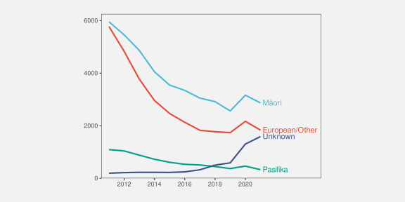
As we saw in Section 13.7, the decoding of a legend requires several steps of indirection: from text label in the legend to coloured data symbol in the legend to coloured data symbol in the plot. The direct labelling in Figure 13.17 reduces the number of steps. The text label can be decoded to give the ethnic group, then the proximity of the label to a line, plus the common colour encoding, visually groups the line with the label (Section 2.7).
This technique reduces the amount of cognition required and also reduces the memory load because information has to be rembered between each step. Furthermore, the proximity of labels to data symbols reduces the number of fixations required to perform the decoding (Section 2.3), which again reduces the memory load.14
13.9 Encoding information
Figure 13.18 shows a very simple bar plot of the youth crime rate in New Zealand for 2021, broken down by ethnic group. There are no text data symbols in this plot, but in addition to the text on the axes, there is text in the overall plot title and there is text in the x-axis title.
Many of the data visualisations that we have seen previously have contained titles like these, but, as with the axes and legends, we have largely ignored their role. This section looks at the important work that titles and other larger pieces of text are performing within a data visualisation.
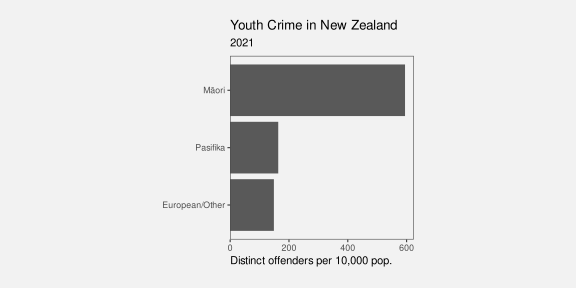
The first important point is that, although we are no longer encoding data values as data symbols, there is still an encoding happening. For example, the x-axis title encodes information about the data values that are being encoded as horizontal position, in this case the crime rate. The x-axis title does not encode any particular crime rate data value, but it does encoded a description of what those data values mean.
In other words, the x-axis title encodes metadata rather than raw data values (Figure 13.19).
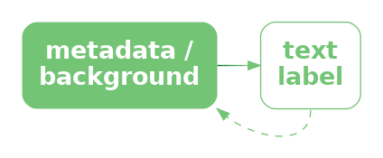
The overall plot title is similar, though more general again. This is not an encoding of specific data values, or a description of the data values, but a description of the overall topic of the data visualisation. A title may also summarise the overall message that should be drawn from the data visualisation.15
The titles on a data visualisation contain information like descriptions of variables and units of measurement and references to data sources. These are all important pieces of information, but they are more complex, more abstract, and far fewer in number than data values. Fortunately, text is very capable of expressing complex information and works very well in small amounts, so it is ideal for this role.
To emphasise the unique ability of text to encode complex information, Figure 13.20 shows a variation on Figure 13.18 that uses small icons to express the plot title.16 Icons like text, have learned decodings, so that we can decode “youth”, “crime”, and “New Zealand” from the icons in the title. However, the decodings of icons are far less precise, for example, we could also decode “child” or just “person” from the first icon and we could decode “prison” or “police” from the second icon. Furthermore, it is much harder to compose pictograms in the way that text can be composed into phrases and sentences.
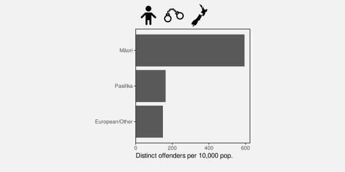
Text is the only way to encode the type of complex and abstract information that is required for titles and axis labels.
Another use of text in a data visualisation is to label specific points of interest.17 For example, Figure 13.21 shows a variation of Figure 9.4, with text added to help explain the result of the Rugby World Cup final to disillusioned New Zealanders. This demonstrates further the value of text as the only way to encode complex and nuanced information.18
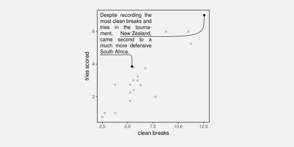
Figure 13.21 also demonstrates that text is an effective way of directing attention (Section 2.6). Text labels can explicitly describe important areas of the data visualisation or even important information to extract from the data visualisation.
13.10 Dangers of text
Figure 13.22 shows a data visualisation of the number of gun deaths in Florida between 1990 and 2012, covering the enactment of Florida’s “stand your ground” law that loosened the constraints on an individual’s rights to use deadly force.19 The title of the plot points out that gun deaths decreased after the law was enacted, which is perhaps surprising given that use of deadly force was less constrained after the introduction of the law.
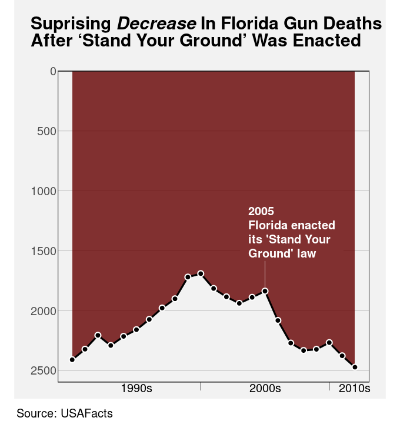
However, if we look closely at the plot itself, we can see that the y-axis scale is inverted. A downward trend is actually an increase in gun deaths, so the data shows that gun deaths actually increased after the law was enacted.
The point of this example is to demonstrate that the text within a data visualisation is not only given a lot of attention, but it can have a dominant effect on the message that the viewer takes away.20
Figure 13.22 is an example of a deliberately misleading data visualisation, which we obviously want to avoid. However, the broader point is that we need to be at least as careful with our encoding of information in text labels as we are with our encoding of data values to visual features. We have a responsibility to make sure that there is a consistent message from both data symbols and text labels.
Figure 13.23 shows that we are also responsible at a more fundamental level for making sure that text labels are legible and easy to understand.21 Figure 13.23 shows data on the fortunes of New Zealand political parties since the 2023 election. The title is not misleading in this case, but it is not easy to understand. The main data values that are encoded in the bars of Figure 13.23 are the difference between the percentage of votes that each party gained at the election and the percentage of respondents who would vote for each party according to the most recent 30-day rolling average of poll results since the election. It is not clear what the best title for this plot would be, but it is also clear that the current title is not the best.
In addition, the text labels at the end of each bar in Figure 13.23 are complicated, quite small and congested, and they are not regularly formatted. For example, the numbers in the labels on the bars to the right do not line up, so they are not easy to read and compare (Section 13.5).
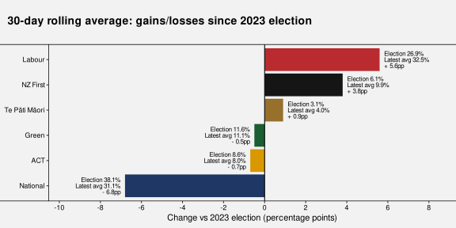
Although text is extremely flexible and expressive, it is also complex and it is quite easy to generate a garbled or confusing piece of text.22 Just because it is possible to encode complex information as text labels does not mean that it will always be easy to decode complex information from a text label.
13.11 Case study: Linear pairwise plots
Figure 13.24 shows a correlation matrix of seven performance measures for teams in the 2023 Rugby World Cup (Table 9.1). We can see that many measures have quite a strong positive correlation (dark red circles), but one measure (the number of tackles per game) is negatively correlated with all other measures (though often only very weakly).
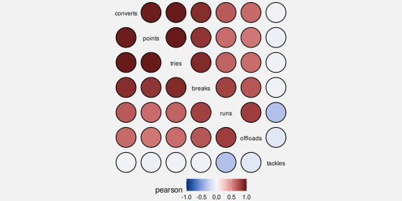
When the number of variables becomes large, a correlation matrix becomes an inefficient use of space.23 An alternative is to produce a linear plot of pairwise correlations, as shown in Figure 13.25.
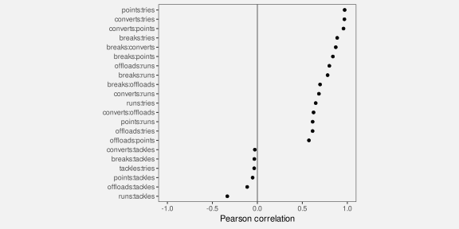
The data symbols in Figure 13.25 are circular data points. The correlation between a pair of measures is encoded as the horizontal position of the circles and the vertical position encodes for different pairs of measures.
The different pairs of measures are also encoded as the pattern of the tick labels on the y-axis. This encoding of the tick labels is an essential encoding because we cannot decode the pairs of measures from the vertical position of the circles alone.
However, the encoding of the pairs of measures is an example of a poor text encoding because it is difficult to decode the variable names from the text pattern. Each tick label consists of two measure names separated by a colon. That makes a piece of text that is not a recognisable word, or a recognisable expression, so it is more difficult for our learned decoding to extract the information about the measures.
Figure 13.26 shows improved tick labels. The formatting in these labels makes it easier to decode individual measure names for each pair of measures.
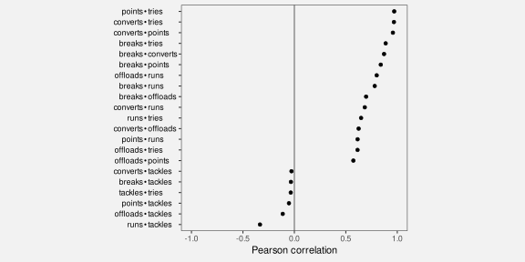
13.12 Case study: Alt text
A data visualisation as a conversion of information into a visual representation (Section 1.2). We saw in Section 6.7 that a data visualisation that makes use of a colour encoding can take into account red-green colour blindness, but what about a low-vision or blind audience?
The standard approach to provide support for making visual content accessible is to provide some form of alt text, which consists of a purely text-based description of the image. A text description of a data visualisation is accessible because it can be recognised and read out by a screen reader.
Ideally, any image will be accompanied by alt text and accessibility is even mandated in many public service organisations.24 The alt text for a data visualisation will ideally describe what variables are being displayed and how they are encoded (what sort of plot is it), data summaries like trends, clusters, outliers, and correlations, and include the main message of the visualisation, including causal explanations and wider implications.25
In terms of the framework of this book, alt text is a purely text-based encoding. However, more important than that is the fact that alt text is not a visual decoding. The alt text for a data visualisation will be decoded by listening to a screen reader rather than by any visual pathway. The early processing of auditory signals occurs in a different part of the brain than visual input.
On the other hand, because text is language, the higher-level processing of auditory alt text involves the same learned decodings as visual text. This means that alt text is capable of communicating both simple and complex information, but only in relatively small amounts. Unsurprisingly, alt text is not effective for communicating large amounts of individual data values.
13.13 Summary
Data values can be encoded as the visual features of text, such as position and colour, just like for other data symbols.
The pattern of text—the characters used in text—is particularly important because we have a learned decoding of text. We can read data values from text.
We can use text to encode any type of data, we can represent a very large number of different categories, and we can decode individual data values from text extremely accurately.
On the other hand, decoding a large number of data values from text is very slow and we cannot generate visual summaries from text.
The text elements within axes and legends are essential components of a data visualisation because they provide the only precise decoding of exact data values. This is what allows the decoding of the main data symbols within a data visualisation.
Titles and annotations are very important components of a data visualisation because they are the only way to encode complex and higher-level information, such as metadata and the overall subject matter of a data visualisation.
Text is very valuable in a data visualisation for accurately encoding a small number of data values, or to express complex information. But text is not appropriate for representing a large number of raw data values.
Ackoff, Russell L. 1989. “From Data to Wisdom.” Journal of Applied Systems Analysis 16: 3–9.
Borkin, Michelle A., Zoya Bylinskii, Nam Wook Kim, Constance May Bainbridge, Chelsea S. Yeh, Daniel Borkin, Hanspeter Pfister, and Aude Oliva. 2016. “Beyond Memorability: Visualization Recognition and Recall.” IEEE Transactions on Visualization and Computer Graphics 22 (1): 519–28. https://doi.org/10.1109/TVCG.2015.2467732.
Brath, Richard. 2020. Visualizing with Text. AK Peters Visualization Series. CRC Press, Taylor & Francis Group. https://doi.org/10.1201/9780429290565.
Brath, Richard, and Ebad Banissi. 2016. “Using Typography to Expand the Design Space of Data Visualization.” She Ji: The Journal of Design, Economics, and Innovation 2 (1): 59–87. https://doi.org/https://doi.org/10.1016/j.sheji.2016.05.003.
Carpenter, Patricia A., and Priti Shah. 1998. “A Model of the Perceptual and Conceptual Processes in Graph Comprehension.” Journal of Experimental Psychology: Applied 4 (2): 75–100. https://doi.org/10.1037/1076-898X.4.2.75.
Chinwan, Amit, and Catherine Hurley. 2025. Bullseye: Visualising Multiple Pairwise Variable Correlations and Other Scores. https://cbhurley.github.io/bullseye/.
Cleveland, William S. 1985. The Elements of Graphing Data. Monterey, CA: Wadsworth Advanced Books; Software.
Ehrenberg, A. S. C. 1977. “Rudiments of Numeracy.” Journal of the Royal Statistical Society: Series A (General) 140 (3): 277–97. https://doi.org/https://doi.org/10.2307/2344922.
Fygenson, Racquel, Lace Padilla, and Enrico Bertini. 2025.“Cognitive Affordances in Visualization: Related Constructs, Design Factors, and Framework .” IEEE Transactions on Visualization & Computer Graphics 31 (12): 10624–39. https://doi.org/10.1109/TVCG.2025.3610803.
Kim, Dae Hyun, Vidya Setlur, and Maneesh Agrawala. 2021. “Towards Understanding How Readers Integrate Charts and Captions: A Case Study with Line Charts.” In Proceedings of the 2021 CHI Conference on Human Factors in Computing Systems. CHI ’21. New York, NY, USA: Association for Computing Machinery. https://doi.org/10.1145/3411764.3445443.
Kong, Ha-Kyung, Zhicheng Liu, and Karrie Karahalios. 2019. “Trust and Recall of Information Across Varying Degrees of Title-Visualization Misalignment.” In Proceedings of the 2019 CHI Conference on Human Factors in Computing Systems, 1–13. CHI ’19. New York, NY, USA: Association for Computing Machinery. https://doi.org/10.1145/3290605.3300576.
Murrell, Paul. 2025. “Data Verbalisation: What Is Text Doing in a Data Visualisation?” https://arxiv.org/abs/2506.15129.
Satyanarayan, Alan Lundgard AND Arvind. 2022. “Accessible Visualization via Natural Language Descriptions: A Four-Level Model of Semantic Content.” IEEE Transactions on Visualization & Computer Graphics (Proc. IEEE VIS). https://doi.org/10.1109/TVCG.2021.3114770.
Schwabish, Jonathan A. 2020. “Ten Guidelines for Better Tables.” Journal of Benefit-Cost Analysis 11 (2): 151–78.
Shah, Priti, and James Hoeffner. 2002. “Review of Graph Comprehension Research: Implications for Instruction.” Educational Psychology Review 14 (1): 47–69. https://doi.org/10.1023/A:1013180410169.
Tufte, Edward R. 1983. The Visual Display of Quantitative Information. Cheshire, Connecticut: Graphics Press.
Tukey, John W. 1977. Exploratory Data Analysis. Reading, MA: Addison-Wesley.
Wainer, Howard. 1992. “UNDERSTANDING GRAPHS AND TABLES.” ETS Research Report Series 1992 (1): 4–20. https://doi.org/https://doi.org/10.1002/j.2333-8504.1992.tb01443.x.
Ware, Colin. 2021. Information Visualization: Perception for Design. 4th ed. Morgan Kaufmann.
“Web Accessibility Standard 1.2.” 2025. Digital Government, New Zealand Government; https://www.digital.govt.nz/standards-and-guidance/nz-government-web-standards/web-accessibility-standard-1-2.
Wikipedia. 2024. “Rugby World Cup: Wikipedia, the Free Encyclopedia.” http://en.wikipedia.org/w/index.php?title=Rugby%20World%20Cup.
Wilkinson, Leland. 2005. The Grammar of Graphics. Second edition. New York: Springer.
World Wide Web Consortium (W3C). 2025. “Web Content Accessibility Guidelines (WCAG) 2.1.” Recommendation. W3C. https://www.w3.org/TR/WCAG21/.
World Wide Web Consortium (W3C) Web Accessibility Initiative (WAI). 2025. “Complex Images — Images Tutorial.” https://www.w3.org/WAI/tutorials/images/complex/.
And how well a data visualisation can be recalled is another way to measure its effectiveness: “a memorable visualization is often also an effective one.” Borkin et al. (2016).
Only a thumbnail version of the original image is shown in Figure 13.2 in order to comply with terms of use of the MASSVIS data set.↩︎
Brath (2020) provides a very thorough treatment of the use of text in data visualisation and is the source of many ideas in this chapter.
Murrell (2025) provides an more in-depth version of much of this chapter.↩︎
This is similar to the way that data values can be encoded and decoded using the visual features of visual shapes and visual objects (Section 10.4 and Section 12.3).↩︎
Brath and Banissi (2016) provides a much longer list of text-specific visual features.↩︎
These assessments, and more, can also be found in Figure 14 of Brath and Banissi (2016), though the information there is largely speculative and by analogy, rather than being based on experimental evidence.↩︎
Although text initially arrives as visual input and therefore follows the visual processing pathways discussed in Section 2.2, there are also separate verbal processing pathways in the brain that are involved in the learned decoding of text as language (Ware 2021, 315–16)↩︎
Ware (2021) neatly summarises when to use text and when not to use text:
“When a large number of data points must be represented in a visualization, use symbols instead of words or pictorial icons.” (Guideline G8.18)
“Use words directly on the chart where the number of symbolic objects in each category is relatively few and where space is available.” (Guideline G8.19)
Why is a picture is worth a thousand words? Because 1000 words is 1000 fixations, identifying 1000 visual objects, and then interpreting their combined meaning.↩︎
The Rugby World Cup page of Wikipedia (2024).↩︎
Examples of guidelines for tables include Ehrenberg (1977), (Wainer 1992), and Schwabish (2020).↩︎
The invention of stem-and-leaf plots is attributed to Tukey (1977).↩︎
“If we are going to make a mark, it may as well be a meaningful one. The simplest - and most useful - meaningful mark is a digit” (Tufte 1983).↩︎
Another name for a legend is a key.
Wilkinson (2005) collects all axes and legends within the single concept of a guide. However, axes, legends, and labels are typically treated as very distinct from the data symbols within a data visualisation. For example, Fygenson, Padilla, and Bertini (2025) distinguish contextualizing visual elements, which “do not encode data directly”, from marks (data symbols).↩︎
In the case of a dot plot, like Figure 13.16, the dotted lines are also a big help in associating each tick label with a circle. The dotted lines are an example of using connection to create a visual group (Section 2.7).↩︎
Shah and Hoeffner (2002) include the following advice for legends: “reduce the difficulty viewers face in keeping track of graphic referents because of the demands imposed on working memory.”
Carpenter and Shah (1998) give evidence from eye tracking that there is a memory load from switching between legend and plot: “viewers must continuously reexamine the labels to refresh their memory.”↩︎
Suggestions for what to include in a plot title (and exhortations that we must always include a title!) are a popular inclusion in data visualisation guidelines. For example, from Cleveland (1985):
- Describe everything that is graphed.
- Draw attention to the important features of the data.
- Describe the conclusions that are drawn from the data on the graph.
Child image by Creative Stall from Noun Project (CC BY 3.0)
Handcuffs image by Uswa KDT from Noun Project (CC BY 3.0)
New Zealand image by Sharon Faria from Noun Project (CC BY 3.0)↩︎
These sorts of text labels are often referred to as annotations.↩︎
We have described data visualisations mostly in terms of encoding data values because that is what is encoded in data symbols. We have mostly only considered the encoding and decoding of very simple forms of information: data values or data summaries. In this chapter, the addition of text vastly expands the range of information that we can encode and decode. Text is very powerful because it can convey not just data values, but information, knowledge, understanding, and wisdom (Ackoff 1989).↩︎
Figure 13.22 is based on a Business Insider data visualisation, using data from USA Facts.↩︎
Kong, Liu, and Karahalios (2019) found that titles that are inconsistent with the data symbols bias the decoded information, even more so when recalling the message of the data visualisation later on.
Kim, Setlur, and Agrawala (2021) found that captions (another form of text label) that are consistent with the message in the data symbols make the decoding of the message more effective.↩︎
This plot is based on a plot in the November 15-21 edition of the New Zealand Listener.↩︎
The text of this book no doubt provides multiple examples in support of this claim.↩︎
The plots in this case study, and the idea of linear pairwise plots, come from version 1.0.1 of the {bullseye} package for R (Chinwan and Hurley 2025).↩︎
For example, the New Zealand Government Web Accessibility Standard (“Web Accessibility Standard 1.2” 2025) mandates conformance with the W3C Web Content Accessibility Guidelines (World Wide Web Consortium (W3C) 2025).↩︎
There are many guidelines to assist with generating useful alt text, from the very practical (World Wide Web Consortium (W3C) Web Accessibility Initiative (WAI) 2025) to the more theoretical (Satyanarayan 2022).↩︎